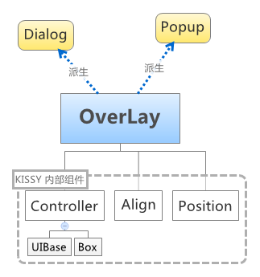

overlay
悬浮的对话框是KISSY核心组件中完整的利用了KISSY的面向对象的组件，是典型的组件拼装模式，继承和派生的用法非常值得学习和借鉴。
Demos
- 从Markup中构建
- 新建markup
- 多个触发元素公用一个 Overlay
- demo3 的另一种实现方式（不推荐）
- 异步加载弹出层内容
- 对话框 新建 + Mask + aria
- 对话框 从 Markup 中构建
- 对话框 限制 + 可缩放
- 对话框 fixed 居中
- 对话框运动到某个位置
- 代理加窗口自动滚动
- Mask 动画效果
- Effect target 效果
Overlay 由三个内部组件派生出来，Controller、Align、Position，Controller又包含另外两个基础组件UIBase和Box。因此Overlay的实例方法大都是组装来的。Overlay对象下挂接两个由他派生出的类：Dialog和Popup，这两个实现是最常用的。

引用方法：
KISSY.use('overlay',function(S,Overlay){
// use Overlay
});一个简单的调用
KISSY.use('overlay',function(S,Overlay){
//通过dom元素新建立popup
var popup = new Overlay.Popup({
srcNode:'#dpop',
trigger : '#img-download',//配置Popup的触发器
triggerType : 'mouse', //触发类型，鼠标触碰时触发
align : {
node : '#img-download',
points : ['tc', 'bc'],
offset : [0, 50]
}
});
});初始化OVerlay之前应当先加上初始样式
<style>
.ks-overlay {
position:absolute;
left:-9999px;
top:-9999px;
}
.ks-overlay-hidden {
visibility: hidden;
}
.ks-overlay-mask-hidden {
display: none;
}
.ks-overlay-shown {
visibility: visible;
}
.ks-overlay-mask-shown{
display: block;
}
</style>其中Dialog的DOM结构为经典的三段式
<div class='dialog'> <!-- 对话框根节点 -->
<div class='content'> <!-- 对话框内容节点 -->
<div class='header'> <!-- 对话框标题节点 -->
</div>
<div class='body'> <!-- 对话框体节点 -->
</div>
<div class='footer'> <!-- 对话框底部节点 -->
</div>
</div>
</div>Overlay/Dialog/Popup API
配置参数
new Overlay(config)
prefixCls
继承自Controller，组件css样式的前缀，默认 “ks-” . 例如假设组件为 menu ，则该组件内的样式类名为 {prefixCls}menu，默认为 “ks-menu”.可用于实现自定义皮肤.
srcNode
继承自UIBase，当前组件在 dom 树中已经存在的节点.
plugins
数组，给出插件，插件格式参照Base。
width
继承自Box，组件的宽度，单位为像素
height
继承自Box，组件的高度，单位为像素
elCls
继承自Box，附加给根节点的样式类
content
继承自Box，设置内容html
zIndex
继承自Position，Number类型，组件根节点的z-index值，默认为9999
x
继承自Position，Number类型， 组件根节点相对于文档根节点的 x 坐标.
y
继承自Position，Number类型， 组件根节点相对于文档根节点的 y 坐标.
xy
继承自Position，数组，相当于将数组第一个元素设置为 x 的值, 将数组的第二个元素设置为 y 的值.
align
继承自Align，JSON对象，组件节点对齐的相关配置, 例如：
{
node: null, // 类型选择器字符串, 对齐参考元素, falsy 值为可视区域
points: ['tr','tl'], // 类型字符串数组, 表示 overlay 的 tl 与参考节点的 tr 对齐
offset: [0, 0], // 类型整数数组, 表示 overlay 最终位置与经 node 和 points 计算后位置的偏移,
// 数组第一个元素表示 x 轴偏移, 第二个元素表示 y 轴偏移.
overflow:{
adjustX:1, // 当对象不能处于可显示区域时，自动调整横坐标
adjustY:1 // 当对象不能处于可显示区域时，自动调整纵坐标
}
}points 字符串数组元素的取值范围为 t,b,c 与 l,r,c 的两两组合, 分别表示 top,bottom,center 与 left,right,center 的两两组合, 可以表示 9 种取值范围，如图，第一个字符取值 t,b,c , 第二个字符取值 l,r,c.

effect
JSON对象，显示隐藏效果，属性包括
- target，KISSY Node或者字符串，动画参考元素
- effect，字符串，可取值 ‘fade’(渐隐显示), ‘slide’(滑动显示).
- easing，字符串，同 KISSY.Anim 的 easing 参数配置.
- duration，数字类型，动画持续时间, 以秒为单位.
举例：
{
target:'', // {String|KISSY.Node} - 可选，动画的参考元素
effect:'none', // {String} - 可选, 默认为'none', 'none'(无特效), 'fade'(渐隐显示), 'slide'(滑动显示).
easing:'', // {String} - 可选, 同 KISSY.Anim 的 easing 参数配置.
duration:3 // {Number} - 可选, 动画持续时间, 以秒为单位.
}closeable
Boolean类型，对话框右上角是否包括关闭按钮
closeAction
字符串，点击关闭按钮的动作。默认 “hide” 隐藏，也可设置 “destroy” 销毁该组件.
elBefore
Node节点类型，组件根节点的渲染到该节点之前.
render
Node节点类型， 默认 S.all(“body”)，组件根节点的渲染为该节点最后一个节点.
mask
Boolean或JSON对象，组件显示时是否使用遮罩层盖住页面其他元素，如果为JSON对象，属性包括：
- closeOnClick，Boolean值，点击遮罩层是否关闭 overlay。
- effect，字符串类型，遮罩层显示隐藏效果. (取值 ‘fade’,’slide’)
- duration，Number类型，效果持续时间. 单位秒
headerContent Dialog专有属性
组件的标题 html.
bodyContent Dialog专有属性
组件的正文 html.
footerContent Dialog专有属性
组件的底部 html.
trigger Popup专有属性
触点集合，可以是选择器、字符串，原生节点，Nodelist等
triggerType Popup专有属性
默认为 ‘click’, 触发类型, 可选 ‘click’, ‘mouse’.
mouseDelay Popup专有属性
单位秒. 可选, triggerType 为 mouse 时, Popup 显示的延迟时间, 默认为 0.1.
toggle Popup专有属性
triggerType 为 click 时, Popup 是否有toggle功能，默认为false，不开启
实例属性
x
x 坐标
y
y 坐标
xy
xy坐标数组
align
对其方式，数组类型
closable
布尔类型，右上角是否有关闭按钮
visible
布尔类型，是否处于显示状态
el
Node节点类型，该组件的根节点. 注意调用 render() 后才可以取得.
contentEl
Node节点类型，该组件的内容所在节点，一般和 el 相同，注意调用 render() 后才可以取得.
maskNode
Node节点类型，遮罩层节点
header Dialog专有
头部内容html
body Dialog专有
正文html
headerContent Dialog专有
组件的头部标题html
bodyContent Dialog专有
组件的正文html
footerContent Dialog专有
尾部html
currentTrigger Popup专有
当前的 trigger 节点
实例方法
Dialog和Popup中都包含同样的实例方法
plugin(plugin)
继承自Base，安装指定插件，参数plugin为Function或者Object，是插件构造器或者插件对象，返回自身,具体参照Base
unplugin(plugin)
继承自Base，卸载插件，参数为字符串或对象，是指定插件的id或者插件对象。返回自身。具体参照Base
render()
继承自UIBase，将组件渲染到dom树中
destroy()
继承自Base，销毁组件
show()
继承自Box，渲染该组件并显示出来.
hide()
继承自Box，隐藏该组件并显示出来.
center()
继承自Align，将节点置于屏幕的中央。
move(x,y)
继承自Position，将组件置于相对于文档左上角的坐标偏移量的位置。
loading()
显示菊花
unloading()
隐藏菊花
实例事件
hide
继承自UIBase，当组件隐藏时触发
show
继承自UIBase，当组件显示时触发
beforeVisibleChange
继承自UIBase，当组件隐藏或显示前触发，事件对象上挂两个属性：
- ev.newVal (Boolean) – 将要隐藏时为 false, 将要显示时为 true
- ev.prevVal (Boolean) – 当前悬浮层显示与否
返回 false 时, 则会阻止将要进行的显示或隐藏动作.
afterRenderUI
继承自UIBase，当组件被渲染 dom 时触发
afterCurrentTriggerChange Popup专有
当 currentTrigger 改变后触发，事件对象挂载属性
- e.newVal ({KISSY.Node}) – 新的 trigger 元素